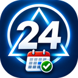

The Meeting Tracker has moved!
New home. Better app. More features.
The full 24 Meeting Tracker is now at ManicZone! Get the latest meeting schedule, attendance tracking, and future updates in the new app.
Open the new applab.maniczone.com/apps/24/meetings
Install the new version on your Home Screen. This older version will no longer receive feature updates.
How to install
- iPhone: Open the new app in Safari, tap Share, and select Add to Home Screen. (If it opens inside this app, tap the compass icon to switch to Safari first.)
- Android: Open the new app in Chrome, open the browser menu, and select Install App or Add to Home Screen.
Once the new app is on your Home Screen, you can remove this old shortcut.
YOUR DAY, AT A GLANCE
Today’s meetings.
A little clarity for the day ahead.
NEXT MEETING TODAY
Know what’s required.
Attendance rules for Phase One residents.
Know what’s required.
Attendance rules for Phase Two residents, from the Club schedule and Phase 2 Policies.
Settings & app information
Your resident phase
Phase One shows the original schedule and attendance requirements.
Phase One is the default. Your choice is remembered on this device.
This is the older version
Attendance tracking, calendar reminders, and all new features are in the new app at lab.maniczone.com/apps/24/meetings. This version only shows the schedule.
The schedule was transcribed from the original Phase One handout. Confirm current meeting times and any separate house or birthday-night requirements with staff.
Preparing offline access…